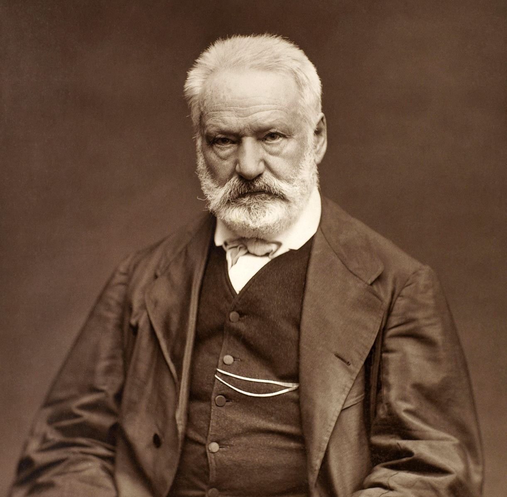

Victor Hugo sinh ngày 26 tháng 2 năm 1802 tỉnh Besançon và qua đời ngày 22 tháng 5 năm 1885 tại Paris. là nhà văn vĩ đại của nước Pháp. Cuộc đời Victor Hugo là cuộc đời đấu tranh không ngừng cho chính nghĩa và cho tự do, dân chủ. Những tác phẩm văn học của ông đã phản ánh trung thành những biến cố lịch sử lớn lao trong cuộc cách mạng của nhân dân Pháp suốt thế kỷ XIX. Không những vậy, Victor Hugo còn thể hiện lòng yêu hòa bình tha thiết và niềm tin tưởng ở con người. Chính vì vậy, các tác phẩm của ông thấm đượm tính nhân văn sâu sắc.

Victor Hugo (1802-1885)
Những người khốn khổ là bộ truyện lớn nhất và là một trong những kiệt tác của Victor Hugo. Ông đã ấp ủ, suy nghĩ về đề tài này và viết trong ba mươi năm trời. Năm 1862, Những người khốn khổ được xuất bản và thành công vang dội. Chỉ trong vài tiếng, sách đã bán hết hàng mấy ngàn bản. Những người khốn khổ không những là một bản anh hùng ca của thời đại mà còn thấm nhuần tư tưởng nhân đạo, ca ngợi tự do dân chủ, chống lại áp bức cường quyền. Trong tác phẩm Những người khốn khổ, tác giả đã thể hiện lòng thương cảm sâu sắc đối với những con người bị xã hội chà đạp và lòng tin vào tâm hồn cao thượng của họ. Họ chính là những người như Jean Valjean đã từng là tù khổ sai, dẫu bị săn đuổi, truy lùng nhưng vẫn cố vươn lên, là Fantine - Người mẹ nghèo bị đọa đày nhưng vẫn hết lòng vì con và còn là chú bé Gavroche hồn nhiên, dũng cảm và nghĩa hiệp...
Gavroche tuy đói khổ và nhiễm chút “bụi đời” nhưng vẫn rạng ngời phẩm chất tốt đẹp. Chú căm ghét kẻ giàu và sẵn sàng giúp đỡ người nghèo khó. Dẫu không có cái ăn, cái mặc, không có chỗ ngủ nhưng chú vẫn ném chiếc khăn choàng cho cô bé hành khất đang rét run trên đường phố. Định “chôm” mấy quả táo ăn cho đỡ đói nhưng khi biết cụ Mabeuf nghèo túng, Gavroche đành thôi và tìm mọi cách giúp cụ. Chú dùng đồng xu cuối cùng để mua bánh cho hai đứa trẻ lạc đang đói và còn mở rộng bụng voi để chúng ngủ qua đêm...
Paris khởi nghĩa, Gavroche hăng hái ra trận với khẩu súng không cò, miệng hát vang những khúc ca “hòa âm của tiếng chim và xưởng thợ”. Thông minh và dũng cảm, Gavroche luôn có mặt ở những nơi cuộc chiến gay go và ác liệt. Chú như con ong: châm anh sinh viên này, đốt anh thợ kia, đáp xuống, dừng lại, bay lượn trên chiến lũy... “Đôi cánh tay nhỏ của chú là sự chuyển động thường trực, hai lá phổi tí hon của chú chứa đựng sự huyên náo...”
Chiến lũy bị bao vây, mặc dù có cơ hội để thoát ra ngoài nhưng Gavroche vẫn ngoan cường chiến đấu đến cùng. “Chú bé lang thang thành Paris khi da thịt chạm mặt đường, thì cũng như người khổng lồ Antée chạm mặt đất. Chú ngã xuống chỉ để chồm lên đưa hai tay lên trời hướng về bọn bắn súng hát tiếp khúc ca dang dở...”
Bằng lối hành văn sinh động và hóm hỉnh, Victor Hugo đã làm sống dậy hình ảnh của thiếu nhi Pháp trong cuộc cách mạng qua nhân vật Gavroche. Gavroche trở thành biểu tượng của thanh thiếu niên Pháp yêu nước và chiến đấu dũng cảm. Trong thời kỳ Phát xít Đức xâm chiếm Pháp, một đội du kích Pháp đã lấy tên Gavroche để chiến đấu chống kẻ thù xâm lược. Hình tượng Gavroche vừa hồn nhiên, trong sáng vừa dũng cảm hào hùng đã gây xúc động và niềm cảm phục sâu sắc trong lòng bạn đọc nhiều thế hệ trên thế giới.
Những người khốn khổ của đại văn hào Victor Hugo được Nhóm Văn học Lê Quý Đôn dịch, và do cha tôi là Giáo sư Huỳnh Lý chủ biên. Là nhà giáo lão thành, nặng lòng với thế hệ trẻ, thấy nhân vật Gavroche ngây thơ, đáng yêu và có ý nghĩa giáo dục cao nên cha tôi đã thống nhất với các dịch giả để tôi biên soạn Chú bé thành Paris và Nhà xuất bản Kim Đồng đã in năm 2002. Mong rằng đọc Chú bé thành Paris, các bạn sẽ thêm yêu thích các tác phẩm văn học kinh điển và biết trân trọng những gì mình đang có.
Huỳnh Phan Thanh Yên